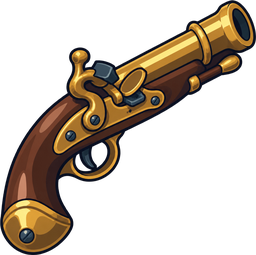
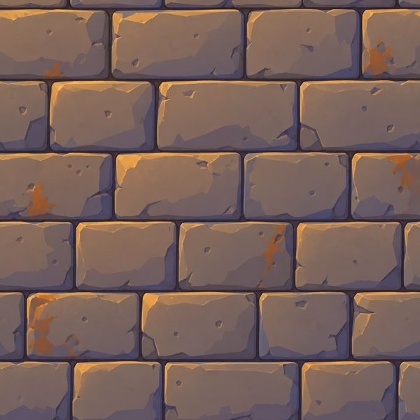
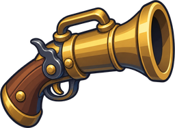

The Gun and the Wall
How the thumb controls work, how the four starting guns differ, and what the wall does for you.
On this page
Note The Belfry Gun is live on Google Play and still being updated, so the numbers and details here are today's and may change.
Controls: one thumb
- Touch and hold anywhere on the field. The gunner aims at your thumb and fires as fast as the gun allows.
- Lift your thumb to stop firing.
- The gun reloads by itself when it runs empty, or after a moment of not firing.
There are no buttons to hunt for mid-fight, so your other hand is free.
The wall
The wall runs across the bottom of the field, and the gunner stands on top of it. Rust that reaches the stones chews on them, and the wall is your health bar: when it falls, the run ends. Spitters and Gargoyles can hurt it from range, so killing what is near is not always enough.

Plenty of things help the wall: coats, wall stones and plating at the workshop, the chapel, the mortar crew, the lantern moth, and the Belfry's Memory between runs. Do not put everything into damage, because a big gun is no use if the wall is gone.
The four starting guns
Every run begins with one of four plain guns. Here are their base numbers before any loot, skills or character perks.
| Gun | Damage | Shots a second | Magazine | Reload (s) | Crit | Special |
|---|---|---|---|---|---|---|
| Pistol | 10 | 4.0 | 10 | 1.0 | 8% | Fast, light, quick reload, good at crits |
| Rifle | 32 | 1.25 | 5 | 1.6 | 5% | Slow and hard-hitting; shots pierce |
| Scattergun | 9 per pellet | 1.6 | 5 | 1.4 | 5% | Five pellets in a cone; knocks the Rust back |
| Big gun | 36 | 0.9 | 3 | 1.8 | 4% | A slow mortar that bursts where it lands |
Which one should you start with?
- Pistol. The friendliest. It fires quickly and is forgiving when you are still learning where to aim.
- Rifle. Slow, but each hit counts, and it pierces. Great against armoured Rust, where small hits are mostly wasted.
- Scattergun. Good against crowds and swarms, because pellets spread and knock things back.
- Big gun. Slow bursts that hit whole groups where they land. Rewarding if you lead your shots.

Tip A gun's own skills only work while you carry that kind of gun. If you swap to a different class mid-run, those picks stop helping. See Skills and the workshop.
Loot can replace your gun during a run. See Guns and loot.